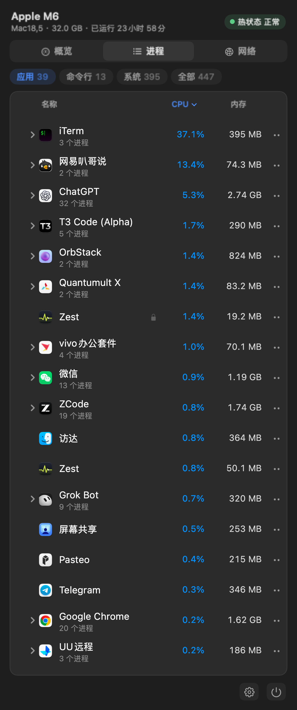
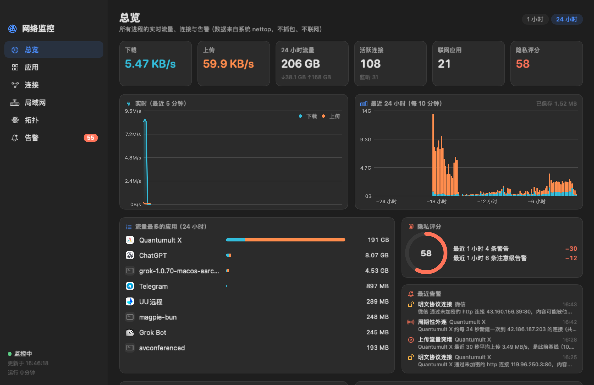
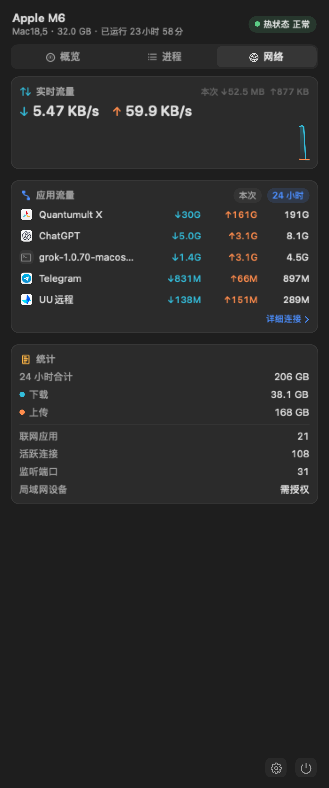
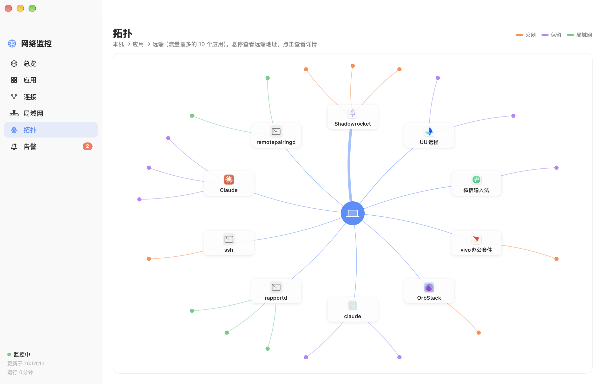

系统状态，实时可见
CPU、内存压力、磁盘读写、温度与风扇转速。指标来自 macOS 与硬件传感器，不可用时如实显示。
Zest 把系统状态、应用进程和网络连接，安静地放在菜单栏里。轻巧常驻，细节随时可见。

按你的习惯排列菜单栏指标。点开面板查看趋势、进程和网络摘要；平时，Zest 安静地待在一旁。
CPU、内存压力、磁盘读写、温度与风扇转速。指标来自 macOS 与硬件传感器，不可用时如实显示。
按应用汇总 CPU 与内存占用。支持排序与快速退出；强制退出前，会再给你一次确认。
自由选择和拖动 CPU、内存、磁盘、网速、温度与风扇指标。浅色、深色菜单栏都自然融入。
面板里看系统、进程和网络摘要。需要细看时，再打开网络监控窗口。
Menu bar · Network



从哪个应用发起、连接去了哪里、流量何时变化——打开网络监控窗口，把连接关系看得更清楚。

本机 → 应用 → 远端“它只做一件事：
让 Mac 的状态变得明白。”
用 Swift 与 SwiftUI 打造，没有 Electron、WebView、后台服务或守护进程。采集暂停于屏幕与系统休眠时，让工具保持轻量、克制。